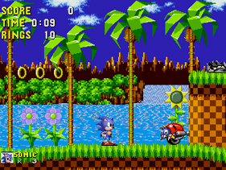
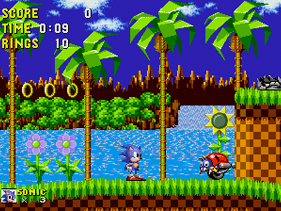

Sonic
Un hérisson bleu qui court à la vitesse de la lumière, cela vous dit quelque chose ? Connu sous le nom de "Sonic The Hedgedog",
ce personnage de SEGA est né en 1990 pour se dresser face à Mario. Les jeux Sonic connaitront un franc succès durant la période 16 bits,
et donneront du fil à retordre à l'équipe Nintendo. Sonic se démarque car, fesant parti des jeux de type plates-formes,
il apporte un gameplay différent basé sur la vitesse. Des millions de joueurs seront séduits, ce qui placera Sonic en tête des ventes dans les années 1990.
Lien des articles :
- Jeuxvideo.com
- Planète Sonic
- Wikipédia
 
